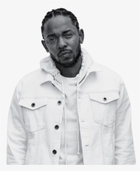

Mac Miller
In Pittsburg, Pennsylvania, on January 19, 1992, Mac Miller was born in the United States. Mac has had a deep interest in music from his early existence.
Consequently, by age six, he had learned to play the guitar, drums, piano, and bass all by himself. As a musician and a rapper, he was aided by his musical passion and zeal.
Retrived from https://besttoppers.com/mac-miller/ on April 29, 2022

Kendrick Lamar
Lamar has received many accolades over the course of his career, including 14 Grammy Awards, two American Music Awards, six Billboard Music Awards, a Brit Award, 11 MTV Video Music Awards, a Pulitzer Prize, and an Academy Award nomination.
In 2012, MTV named him the Hottest MC in the Game on their annual list.[8] Time named him one of the 100 most influential people in the world in 2016.[9] In 2015, he received the California State Senate's Generational Icon Award. Three of his studio albums have been listed in Rolling Stone's 500 Greatest Albums of All Time (2020).
Retrived from https://en.wikipedia.org/wiki/Kendrick_Lamar on April 29, 2022
BONES
Elmo Kennedy O'Connor (born January 11, 1994), known professionally as Bones, is an American rapper, singer and songwriter from Howell, Michigan. He is also the founder of the music collective TeamSESH.
O'Connor is known for his pioneering work in a sub-genres of hip-hop referred to as emo rap[3] and trap metal.[2] Since 2010, O'Connor has released an extensive discography and developed a large fan base.
As of 2019, he has released over 80 albums, mixtapes and EPs across several aliases.
Elmo Kennedy O'Connor was born in Marin County, California,[4] to a mother who designed clothing and a father who was a web designer.
His maternal grandfather was actor Robert Culp.[5] His family lived in Muir Beach, California, before moving to New York City. When O'Connor was seven years old, his family moved to Howell, Michigan.
When he was 16, he dropped out of Howell High School and moved to Los Angeles, where his brother and current manager, Elliott, had already been living.[8]
Despite moving away from his parents at a young age, O'Connor speaks positively of them, stating, "If I tried to write a book about, 'oh, what would be dream parents?', I couldn't even make anything better than them. All they do is shower me in love. Unconditional love, forever."
Retrived from https://en.wikipedia.org/wiki/Bones_(rapper) on April 30, 2022